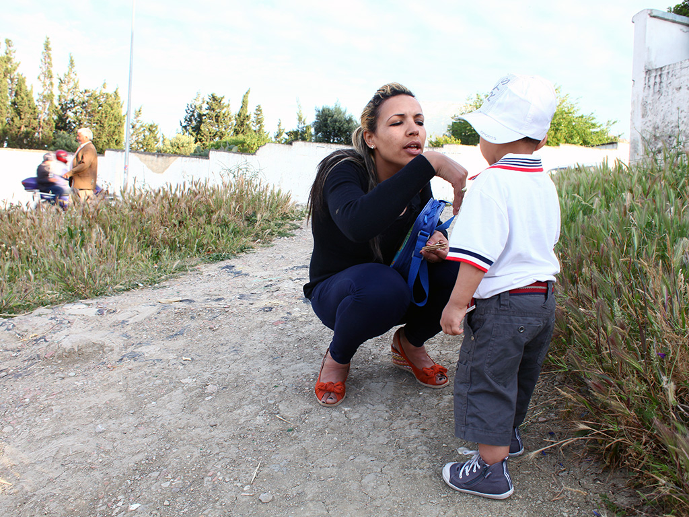

<html>
    <head>
        <meta charset="utf-8" />
        <meta name="format-detection" content="telephone=no" />
        <meta name="viewport" content="width=device-width, initial-scale=1.0, maximum-scale=1.0" />
        <link rel="stylesheet" type="text/css" href="css/index.css" />
        <title>Test</title>
        <script type="text/javascript" src="phonegap.js"></script>
        <script src="js/jquery-1.11.1.min.js"></script>
        <script src="js/jquery.transit.min.js" type="text/javascript"></script>
        <script type="text/javascript" src="js/diapo.js"></script>
        <script type="text/javascript" src="js/Calage.js"></script>
        <script type="text/javascript" src="js/index.js"></script>
        
        <script type="text/javascript">
            app.initialize();
			
			var calageManager;
			var diapo;
			
			
			$( document ).ready(function() {
 		
				
				calageManager = new Calage();
								
				$(document).bind('touchmove',function(e){e.preventDefault();});
				
				createDiapo();
				
				calageManager.calage();
				
				$("#content").bind('mousewheel DOMMouseScroll MozMousePixelScroll', mouseWheenEvent);
			
				
				
			});
			
			function mouseWheenEvent(event, delta){
				
				if(diapo !=null){
					e = event.originalEvent;
					var delta = e.wheelDelta>0||e.detail<0?1:-1;
					diapo.moveSection(-delta);
				}
				
			
			
			}
			
			
			function createDiapo()
			{
				$("#diapo").append('<div id="diapo0" class="diapo calage_fullresize" ></div>');	
				$("#diapo").append('<div id="diapo1" class="diapo calage_fullresize" ></div>');	
				$("#diapo").append('<div id="diapo2" class="diapo calage_fullresize" ></div>');	
				
				diapo = new DiapoPlayer(0, 3, "#diapo", moveBefore, moveAfter, onUpdateDiapo,"slideLR","slideH");
				diapo.start();
				
				calageManager.calage();
			}
			
			function moveBefore(){
				
			}
			
			function moveAfter(){
				
			}
			
			function onUpdateDiapo(){
				
			}
			
			
        </script>
    </head>
    <body>
        <div data-role="page" id="app">
          
          <div id="content" class="calage_fullresize">
          	
            	
                	<div id="diapo" class="calage_fullresize_nolimit"></div>
                
            
          </div>
          
          
        </div>
        
    </body>
</html>